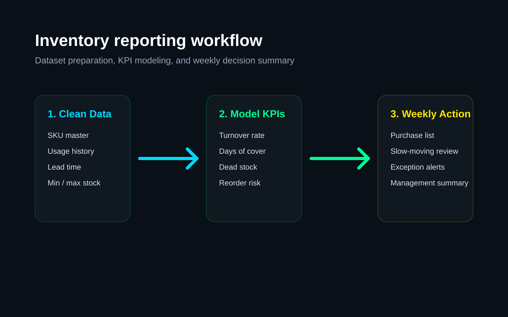
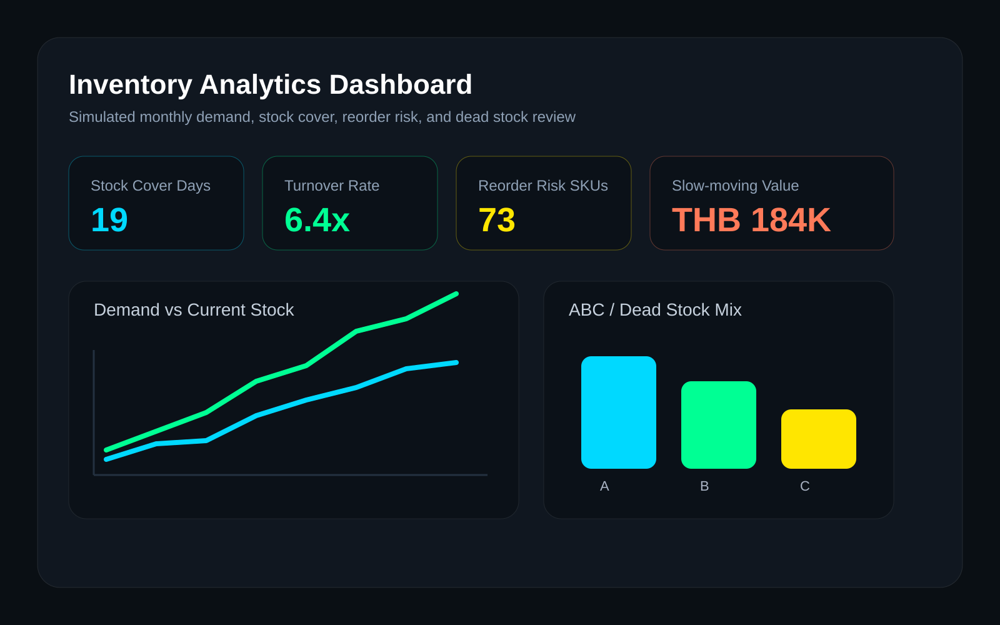

Problem
Inventory teams often have stock data, but not a clear view of dead stock, reorder risk, and which items deserve attention first.
Enterprise Operations Case
A portfolio case built for enterprise-scale inventory reporting: stock availability, demand signals, dead stock, reorder risk, and weekly actions for food, retail, and distribution operations.
1,200+
SKU records modeled
12 Months
Usage and demand history
6 KPIs
Built for weekly decisions
Problem
Inventory teams often have stock data, but not a clear view of dead stock, reorder risk, and which items deserve attention first.
Approach
Build a reporting layer around demand history, stock on hand, lead time, and business rules so exceptions are visible immediately.
Outcome
A dashboard and weekly review flow that helps teams prioritize reorders, slow-moving stock, and at-risk SKUs.

The reporting layer is intentionally business-oriented: a quick KPI row, demand-vs-stock trend, and stock mix review that points the team toward action rather than passive monitoring.
